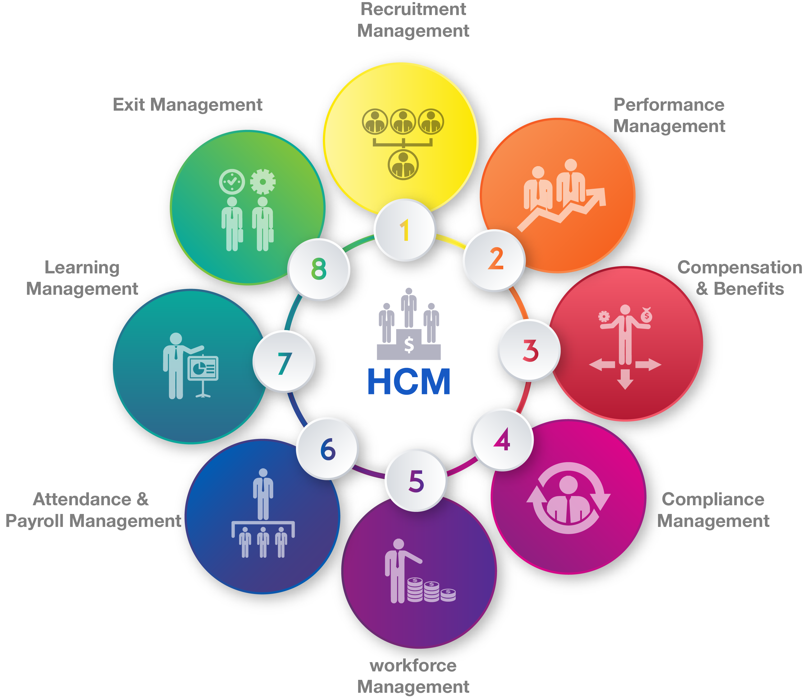
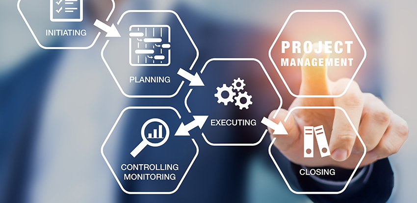
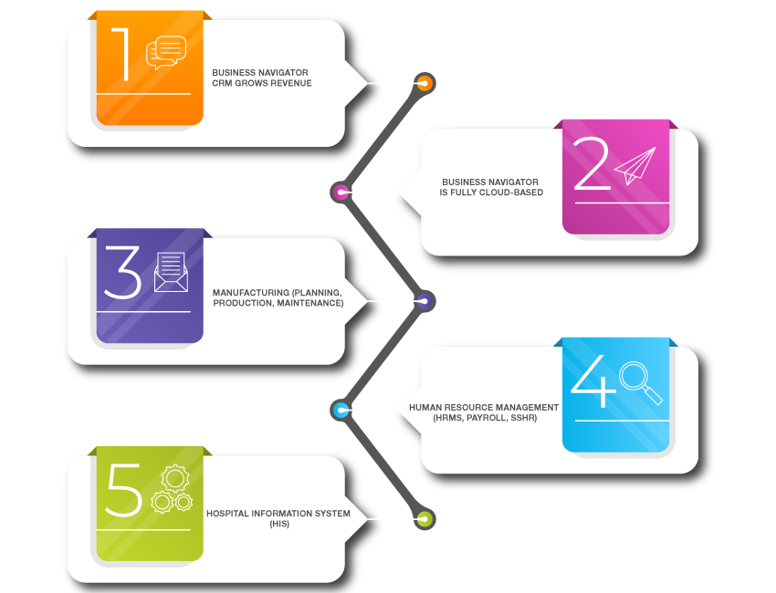

In today’s marketplace, CRM most often refers to the specific tools, usually a web application or software,
that allow organizations to focus their attention on individual customers and associates—be they buyers,
suppliers, service users, or anyone else the organization does business with.
Given the importance of maintaining and perfecting customer relationships, one might assume that these tools
have been a mainstay of business for as long as the concept has existed, but the reality is that CRM is a
relatively new development.

SYMPLX SUPPLY CHAIN MANAGEMENT
Business Navigator ERP Solutions Supply Chain Management functions provide all the capabilities necessary to
optimize the procurement, receipt, warehousing, and shipping of your products. Advanced features include
electronic purchase requisition to PO conversion, including signature loop, unlimited stockrooms and
locations, flexible shipping options, integration with Microsoft Office and Outlook.
SYMPLX HUMAN CAPITAL MANAGEMENT
Complete time and attendance systems designed for small- to mid-sized businesses. Productivity gains of an
automated time and attendance solution without the cost or complexity of a big system. The Time Attendance
tracks employees' time and provides a daily reconciliation of time records as reports or for further
processing by payroll.
As a result, the software cuts down on administrative time, safeguards from error, and save a substantial
amount of money that could have been lost due to mishandled time cards and employees punching in for each
other. It is a complete and a cost effective solution for time and attendance with security.
HRMS payroll is configured to meet the Saudi Labor standards and other company requirements such as GOSI,
Basic Salary, Medical, Housing, Overtime, Absence, Annual Leave, Sick Leave, Loans, Time card, End of Service
calculation, Transportation and other Allowances. HRMS caters for mid to large sized firms with complex
payroll requirements who need a system that is easily configurable.
Selecting Business Navigator ERP Solution

SYMPLX PROJECT & CONTRACT MANAGEMENT
Ideal for creating bids and proposals not only for the construction industry but in general to all
organizations who are responding to tenders or bidding for a project. In addition to performing analysis on
submittals, companies can follow through on wining bids to the execution stages via the project management
approach and the integration to Finance & Distribution to fully manage the implementation to closure.

SYMPLX CUSTOMER RELATIONSHIP MANAGEMENT
In today’s marketplace, CRM most often refers to the specific tools, usually a web application or software,
that allow organizations to focus their attention on individual customers and associates—be they buyers,
suppliers, service users, or anyone else the organization does business with.
Given the importance of maintaining and perfecting customer relationships, one might assume that these tools
have been a mainstay of business for as long as the concept has existed, but the reality is that CRM is a
relatively new development.
Selecting Business Navigator CRM Solution

SYMPLX HEALTH INFORMATION SYSTEM
BUSINESS NAVIGATOR HIS supports the work of medical staff. Staff at various places, whether in a doctor’s office, on
the ward, or in the operating theater or laboratory, use software with a very similar and intuitive interface. The
system can be also used on tablets, thus enabling doctors to access patient information right at the bedside.
It makes the patient identification process more efficient thanks to a wrist band scanning function, enables
quick ordering of tests, access to test results and orders for drug administration, and reduces printing costs.

Admission Room
Supports recording of patient hospital admissions both for inpatient treatment and outpatient consultations, and
offers all the functions related to the operation of an admission room.
Patient Reception Desk
Manages the patient registration process, planning of visits and input of visit-related data. The system enables
work with multiple outpatient clinics and the establishment of a Central Patient Registration function.
Ward
Responsible for the recording of medical information on the patient treatment process on a ward of any specialization.
Operating Theater
Enables management of multiple operating theaters. Given its universal application, the module can be used
both for general operating theaters and those with specialist equipment, and also for smaller treatment rooms.
Hospital Emergency Room
Offers functionalities that facilitate prompter and shorter procedure for patient admission to the Hospital
Emergency Room, TRIAGE, preliminary diagnostics, as well as input of data required to commence necessary treatment.
Pharmacy
A module adjusted to support medium and large hospital pharmacies (having multiple storage rooms), also enabling
the maintenance of separate records for each storage room of the pharmacy.
Drug Ward Management Module
Enables drug management in particular hospital units with possible monitoring of distribution of drugs per
patient. The module helps to reduce the costs related to drug consumption.
Manufacturing application
Business Navigator ERP Solutions provides best-in-class ERP solutions to growing companies that need to take the next step in
the planning and control of their organization. Business Navigator ERP Solutions was developed to offer small- to mid-sized
companies an application with the power and sophistication of much more expensive ERP systems
, at a price even the smallest companies can afford.
Business Navigator ERP Solutions is tightly integrated with Microsoft Office tools, allowing your employees
to manage their tasks efficiently from within one application..

Document Archive management
Business Navigator ERP Solutions provides best-in-class ERP solutions to growing companies that need to take the next step in
the planning and control of their organization. Business Navigator ERP Solutions was developed to offer small- to mid-sized
companies an application with the power and sophistication of much more expensive ERP systems
, at a price even the smallest companies can afford.
Business Navigator ERP Solutions is tightly integrated with Microsoft Office tools, allowing your employees
to manage their tasks efficiently from within one application.

BUSINESS INTELLIGENCE DASHBOARDS
The real power of an enterprise-wide system is in its ability to relate and analyze information across multiple disciplines.
Business Navigator ERP Solutions provides a rich and powerful set of tools that let you efficiently manage workflows,
analyze processes, and convert raw information into actionable knowledge.
Business Navigator ERP Solutions offers a variety of data analysis and relationship tools, each fully connected to the data
Focus Forms allow users to quickly view, sort, and understand a large volume of related information
Command Centers provide a top-level view of key information about workloads so you
Can quickly identify, prioritize, and respond
Knowledge Centers gather and analyze cost information on a variety of related entities within Business Navigator ERP Solutions for financial analysis and decision support.